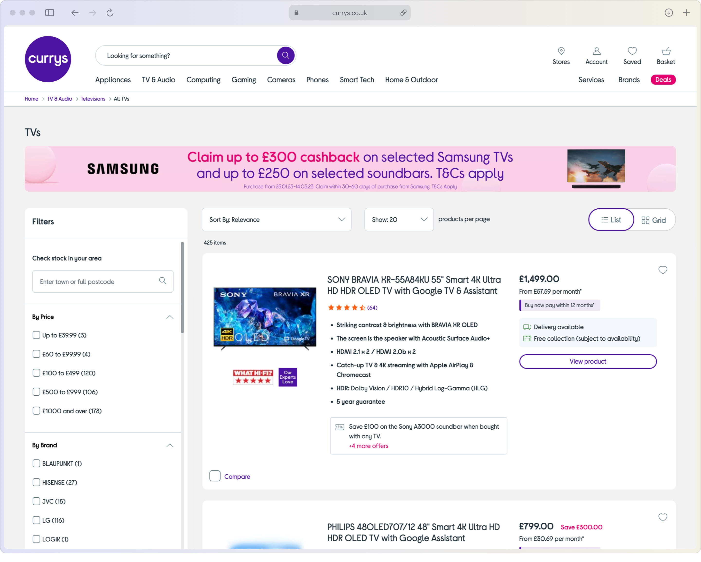

Part of a very ambitious transformation project which included a complete front end re-platform, re-brand and re-design; delivered in just 12 months. I was highly involved in both the UI, and the CMS implementation of this project, including:
Redesign of site UI
Working with the Head of UX & Design to establish our new design principles.
Refreshing and cleaning up front end design, whilst incorporating new branding. Including competitor research, concepts and prototyping.
Working closely with the product team to scope and write specifications / user stories for new functionality.
Collaborating with offshore development teams to ensure they build to specifications and understand any accessibility requirements for designs.
Replatform from legacy system to Salesforce & Amplience
Played a vital role in complete front end replatform from a bespoke system to Salesforce and Amplience, completed in under a year.
Re-creating 1000s of pieces of content in new systems.
Working with the Business Change team to create and deliver training plans for the teams.
Assisting with front end code to deliver the platform on time.
UAT testing of new front end.
The old PDP page.The re-designed PDP page.
The old product listing page.

The re-designed listing page.
Example of an old landing page.Example of re-designed landing page.